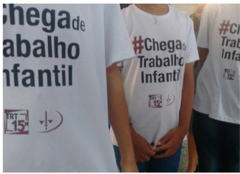

De acordo com o IBGE, em 2023, a região Sudeste teve a segunda menor proporção de crianças e adolescentes em situação de trabalho infantil, com 3,3%. Em números absolutos, a região Sudeste teve 478 mil pessoas em situação de trabalho infantil.

De acordo com a Juíza do Trabalho Camila Ceroni Scarabelli, responsável pelo Juizado Especial da Infância e Adolescência Trabalhista da Região de Campinas, no período de março de 2015 a março de 2019 foram registrado mais de 500 processos na Justiça do Trabalho de Campinas. O grande desafio segundo ela, é identificar as irregularidades para que as medidas cabíveis sejam tomadas pela Justiça.